Hit them all
Press all 25 buttons once before time runs out. Pressing a button you have already hit cuts the overall time limit by 25%.
25 BUTTONS · 10 SECONDS✳ A HOMEMADE HALLOWEEN PROJECT
One box, four little games and a sweet reward. Dreamed up and built from scratch, then brought to life with a micro:bit.
Explore the games ↓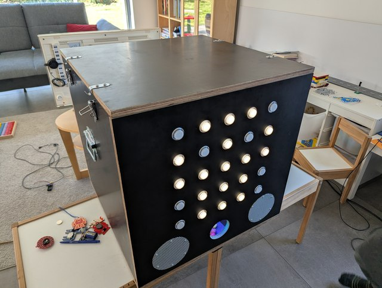
A project to build on and make your own
01 — THE GAMES
Press a button to start one of four randomly selected games. A win starts the candy dispenser. The goal is at least four pieces, but the exact amount is not guaranteed.
Press all 25 buttons once before time runs out. Pressing a button you have already hit cuts the overall time limit by 25%.
25 BUTTONS · 10 SECONDSPress the blue target button and score ten points. A wrong button or a missed round costs one point. The game ends if your score drops below zero.
10 POINTS TO WINWatch four different positions—the sequence appears twice. Then press them in the same order. You have 30 seconds for the whole round, including the display. After your first correct press, two mistakes mean a loss.
WATCH · REMEMBER · REPEATCatch the bright light as it moves. Three hits win; three wrong buttons or 20 seconds end the game. The fading trail does not count.
3 HITS TO WIN↳ Every game is a little different. Which one you get is a surprise until it starts.
02 — IN THE WORKSHOP
The first sketch took shape over breakfast with my children. For the next two months, we worked on the box every evening and made plenty of trips to the hardware store. These photos follow our journey from idea to finished box—they are not a complete set of build instructions.
Explore the parts ↓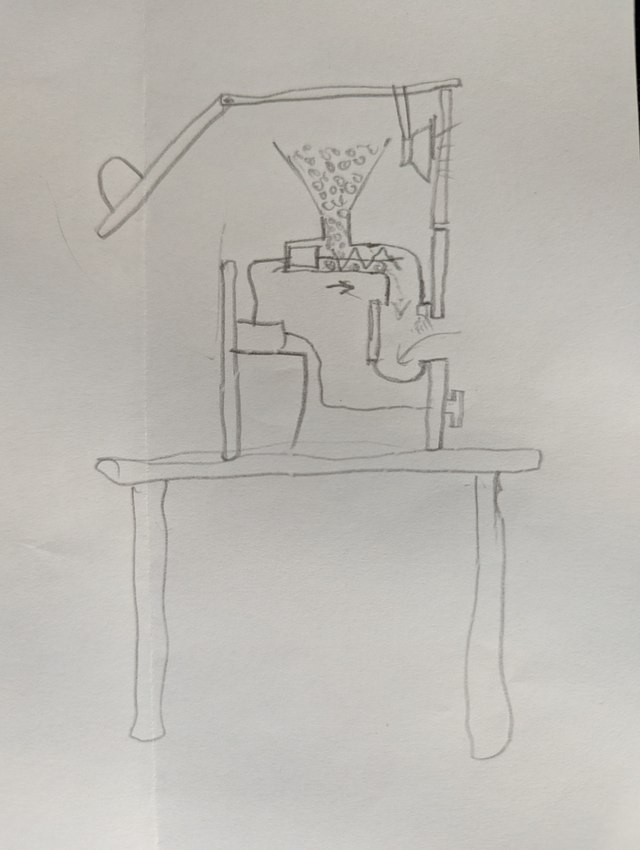
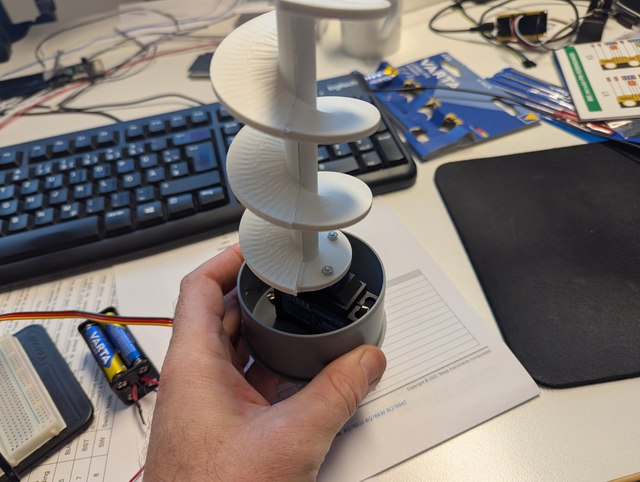
A colleague printed the auger on a 3D printer. To make it more durable, it was printed lengthwise in two halves and glued together.
Which sweets work best? We tried different sweets: wrapped pieces jammed, and chocolate was crushed. In our box, the best results came from Maoam Pinballs — they are round and hard.
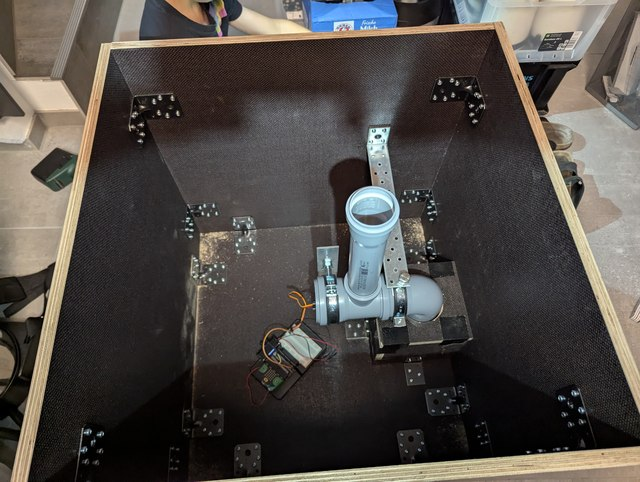
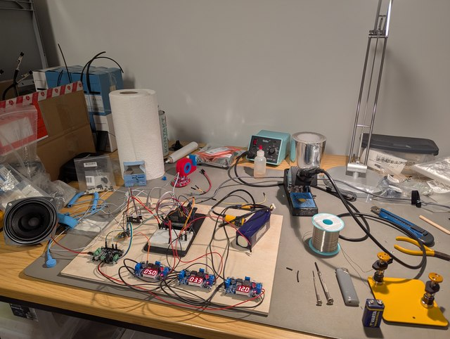
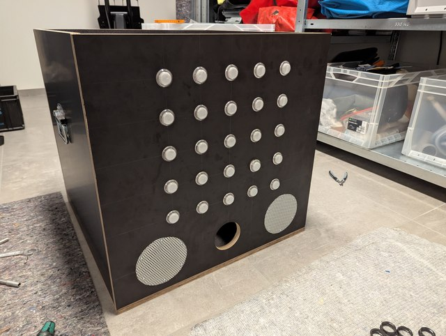
The arcade buttons came with white lamps. We removed them and fitted NeoPixels instead. Each NeoPixel is wired to two three-pin connectors. The button can then be reassembled, with the wires routed through existing gaps.
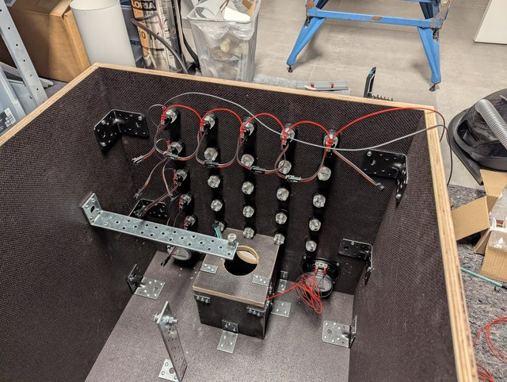
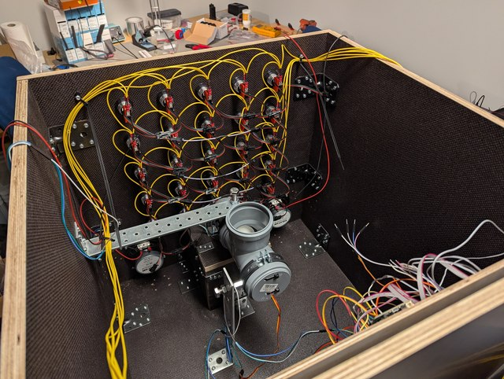
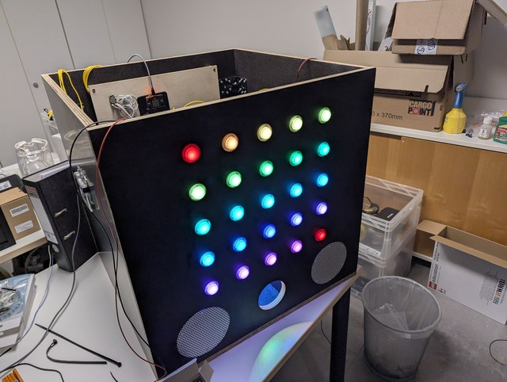
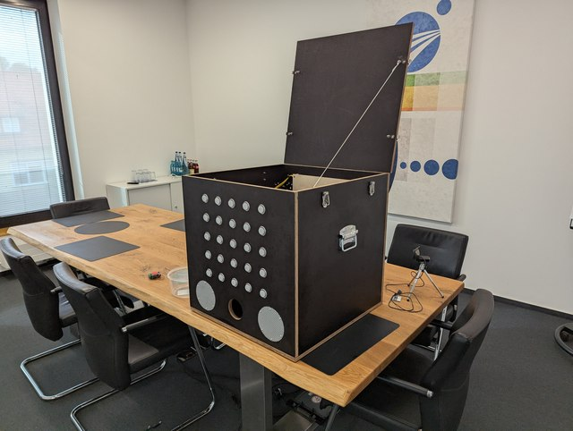
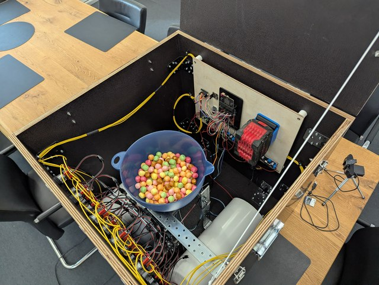
The blue funnel started out as a salad bowl from our kitchen. We cut a matching hole in its base with a hole saw, then hot-glued the bowl to the drainpipe.
Counting candy
The candy sensor sits directly below the auger. It points into the bend in the drainpipe and detects candy as it falls past.
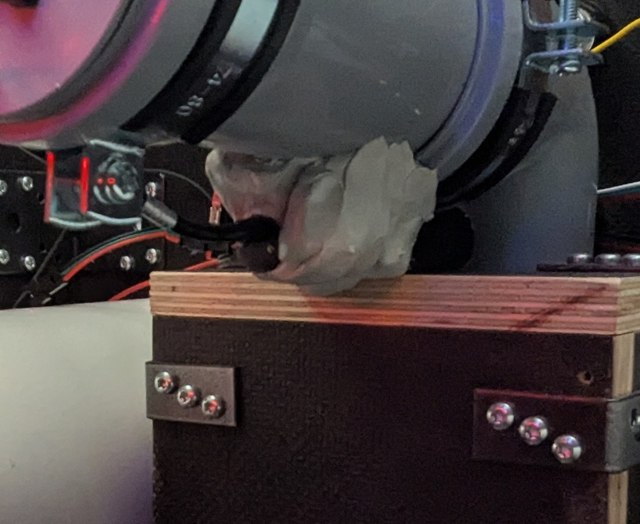
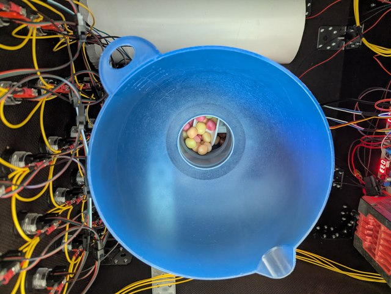
Select any image to open the full-resolution photo in a new tab.
03 — WHAT’S INSIDE
A selection of important components from our build—not a complete shopping list. Links show example products; prices and availability may change.
Speaker enclosures made from ventilation pipe
Our speaker enclosures are ventilation pipes from a hardware store, filled with Visaton speaker damping wool. The angled end pieces are made from XPS and are intended to reduce reflections. The design was calculated with ChatGPT; whether the angled ends are actually necessary is still unclear. The openings are protected by hardware-store perforated sheet metal, cut with a Dremel cutting disc. We used Teroson RB IX to mount the speaker pipes and attach the candy sensor.
Soundscape and effects
A spooky background soundscape and matching sound effects accompany the games. In our build, the two Visaton speakers and MAX9744 amplifier are audible outdoors too. We are not sharing the audio files for now while we check their sources and usage rights. A rebuild will need original or appropriately licensed sounds; we may add cleared files later.
Battery and voltage converters
Our box runs on Bosch Professional batteries (Bosch Blue), connected through a matching holder. Adjustable buck converters provide the voltages needed by our build. Other batteries may also work with a suitable adapter; voltage range, current capacity and protection must suit your own setup.
Although we had concerns about EMC, we have not noticed problems or interference in our build so far. This is not proof of EMC compliance.
Choose wood and metal parts, screws, brackets, handles and tools to suit your own build. Plan the power supply, moving parts and weather protection for your setup. Label sweets and any possible allergens where the box is used.
04 — CODE & BUILD ON
The firmware runs on a micro:bit V2. Open the MakeCode project as Blockly blocks or TypeScript and edit it—or use this build as a starting point for your own box.
In MakeCode, choose Import → Import URL, then enter https://github.com/lilvinz/halloween-box. Build and sync notes in the README ↗